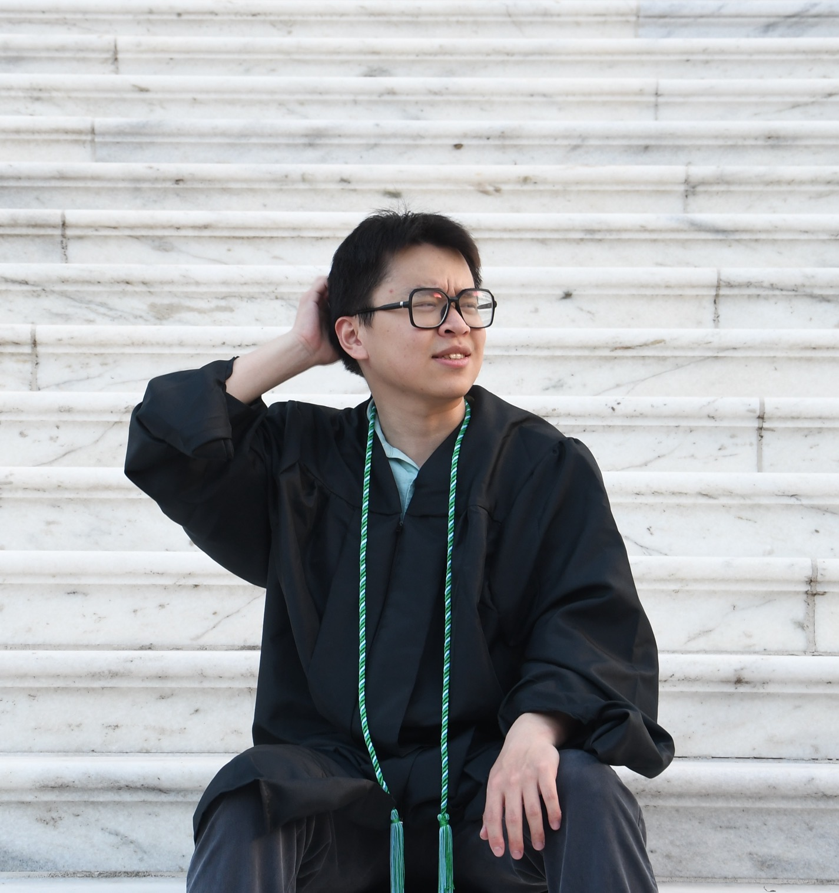
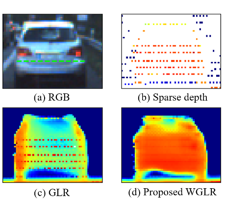

|
Tongxuan Tian Hi, My name is Tongxuan Tian. I am now a research intern at Stanford The Movement Lab advised by Prof. Karen Liu. I hold my Master's degree in Computer Science from the University of Virginia and Bachelor's degree from Tongji University. Previously, I was a visiting student at UC San Digo SuLab, where I was advised by Prof. Hao Su. During my Master's studies at UVa, I started my robotics research in the LIVE Robotics Lab under the supervision of Prof. Yen-Ling Kuo. I was fortunate to collaborate with Prof. Jin Zeng at Tongji University and Dr. Wenxiu Sun at Sensetime Research. Contact: tongxuan259 [at] gmail (dot) com |
 |
{kind=link}
|
Research Interests: 1. Dexterous hand manipulation and loco-manipulation. 2. Multimodal learning including language, vision and touch. 3. Cognitive architecture for embodied intelligence. Selected Publications |

|
Universal Low-Cost Force-Controlled Gripper for Learning Delicate Object Grasping
Xuhui Kang*, Tongxuan Tian*, Sung-Wook Lee, Binghao Huang, Yen-Ling Kuo In Submission, 2025 project page / arXiv TL;DR: A versatile and affordable force-controlled gripper with tactile sensors for delicate object manipulation tasks. |

|
O³Afford: One-Shot 3D Object-to-Object Affordance Grounding for Generalizable Robotic Manipulation
Tongxuan Tian, Xuhui Kang, Yen-Ling Kuo Conference on Robot Learning (CoRL), 2025 project page / arXiv TL;DR: A novel framework using vision foundation models for one-shot 3D affordance learning for robotic manipulation. |

|
UniClothDiff: Diffusion Dynamics Model with Generative State Estimation for Cloth Manipulation
Tongxuan Tian*, Haoyang Li*, Bo Ai, Xiaodi Yuan, Zhiao Huang, Hao Su Conference on Robot Learning (CoRL), 2025 project page / arXiv TL;DR: A novel approach for estimating and learning cloth state and dynamics with diffusion models for cloth manipulation. |
|

|
Deep Unrolled Weighted Graph Laplacian Regularization for Depth Completion
Jin Zeng*, Qingpeng Zhu*†, Tongxuan Tian*, Wenxiu Sun, Lin Zhang, Shengjie Zhao International Journal of Computer Vision (IJCV), 2024 project page / arXiv TL;DR: We propose the deep unrolled Weighted Graph Laplacian Regularization (WGLR) for depth completion task which enforces input constraints in the network design. |
Experience |

|
Stanford University - The Movement Lab
Research Intern, Supervisor: Prof. Karen Liu Jun. 2025 - Present • Led a project on dexterous hand manipulation with tactile sensing (Onging project). • Developed a general real2sim pipeline for tactile-based policy sim2real. • Developed a receipe for tasks that require active sensing with tactile. |

|
UC San Diego - SuLab
Visiting Student, Supervisor: Prof. Hao Su Jun. 2024 - Jun. 2025 • Led a project on cloth manipulation using generative world model (Accepted to CoRL 2025). • Developed a unifed pipeline for state estimation and dynamics modeling using diffusion models. • Led a project investigating the mechanisms of vision-language-action models to enhance steerability and enable customized action generation (Onging project). |
|
|
University of Virginia - LIVE Robotics Lab
Research Assistant, Supervisor: Prof. Yen-Ling Kuo Aug. 2023 - May 2025 • Led research on object-to-object affordance grounding for robotic manipulation (Accepted to CoRL 2025). • Led a project developing a low-cost force–tactile gripper (~$200) that achieves performance comparable to commercial grippers. |
|
|
SenseTime Research
Research Intern, Supervisor: Dr. Qingpeng Zhu Oct. 2022 - Aug. 2023 • Developed deep unrolled weighted graph laplacian regularization methods for real-time and noise-robust depth completion. • Deployed the model on real-world sony sensor. |
Honors and Awards• Outstanding Graduate of Tongji University - Tongji University • 3rd Prize Scholarship for Outstanding Students - Tongji University • 2nd Prize (Team Award) in RoboMaster Robotic Competition - DJI |
Service• Conference Reviewer - NeurIPS 2024, ICLR 2025, AISTATS 2025, CVPR 2025 • Technical Program Committee - HCV Workshop 2024 • Conference Volunteer - ICRA 2025 |
Teaching• UVa CS 4710 - Artificial Intelligence - Teaching Assistant (Fall 2023) • UVa CS 2100 - Data Structures and Algorithms - Teaching Assistant (Spring 2024) • UVa ECE 4380 - AI Hardware - Teaching Assistant (Fall 2024) |
|
Template borrowed from Jon Barron. |